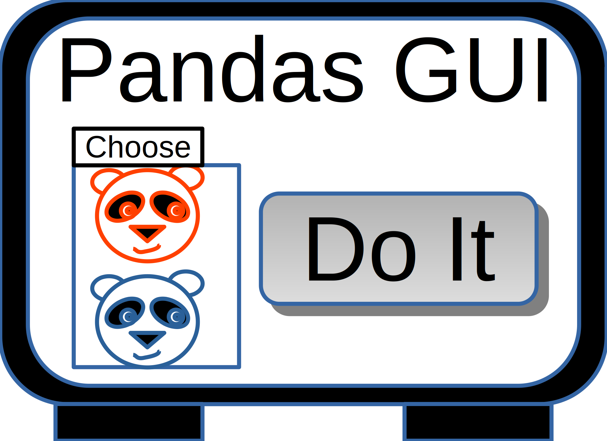

Examples
API Documentation
GIT Repository
Pandas GUI
This package provides Graphical User Interface (GUI) tools to help Jupyter users generate code to analyze, plot and fit data in Pandas DataFrames (see:
Pandas Website
for more about Pandas).